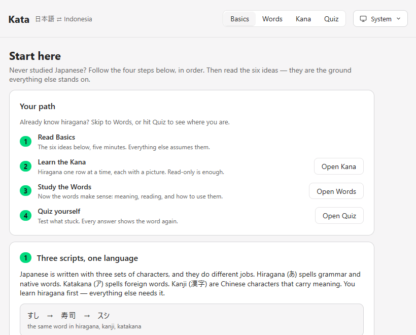
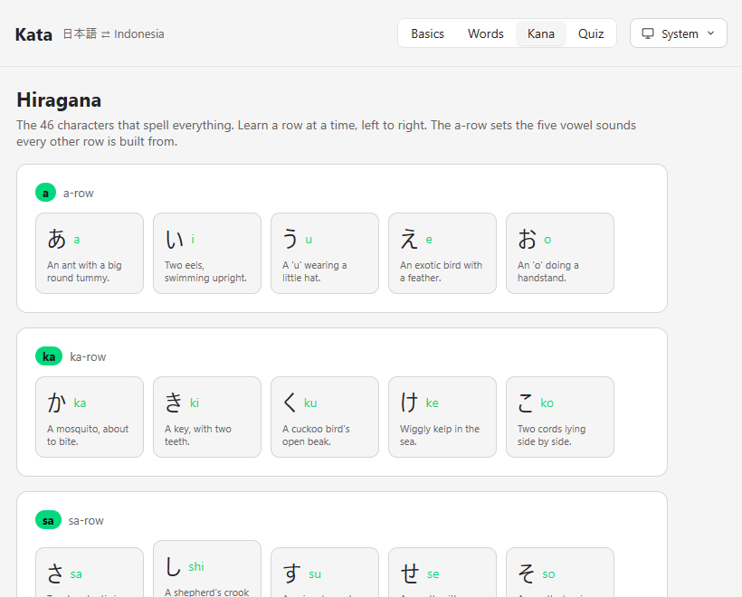
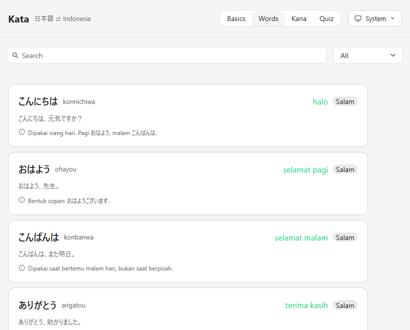
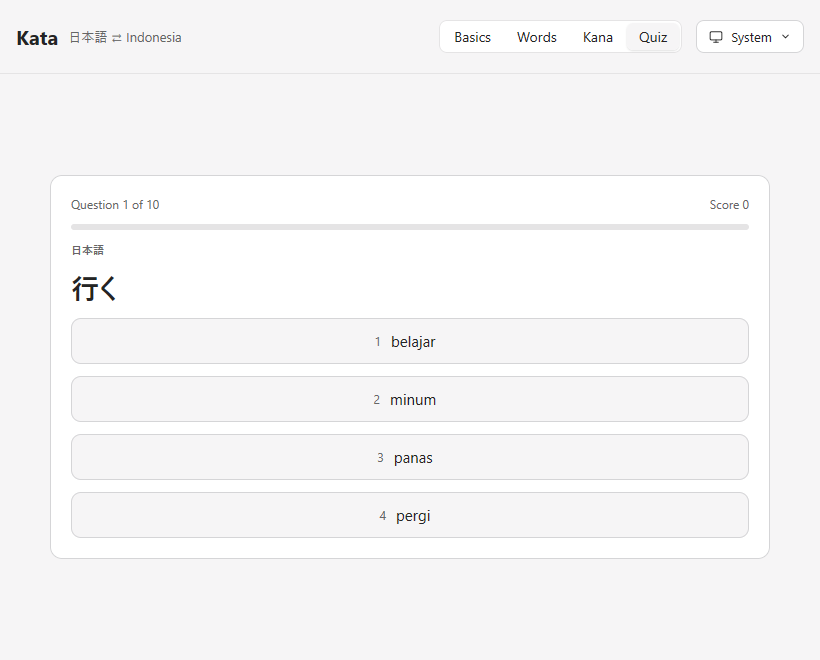

Learn Japanese from ゼロ.
Built for someone who has never read a single character. Kata teaches the ideas first, then the words, then the kana — then tests you on what stuck.
11 MB · no installer cruft · no webview · Indonesian interface

Four steps, in the order a beginner meets them.
Most apps drop you into a word list and hope for the best. Kata doesn't. Open it and you start where you actually are.
-
STEP 01
Read the six ideas.
The three scripts, why there is no word for “is”, politeness levels, how particles mark a word's job, why the verb comes last. Five minutes, and everything after it makes sense.
学生です。 — “(I) am a student” -
STEP 02
Learn the kana, one row at a time.
All 46 hiragana, in teaching order, each with a picture to remember it by — か is a mosquito, ぬ is smooth bendy noodles. Read-only is enough to start.
か — a mosquito, about to bite
-
STEP 03
Study the words — with how to use them.
Every word carries the Japanese, its reading, the meaning, an example, and a note on the real usage: which particle, which politeness, what it does not mean.
ありがとう — “terima kasih”, not for your boss
-
STEP 04
Quiz yourself. Learn from the misses.
Four choices per question, over words or kana. Every answer reveals the word again with its reading and mnemonic — a wrong answer teaches, it doesn't just score.
いい — ii — “bagus”
What it is not.
- Not a game.
- No streak guilt, no energy bars, no cartoon owl. It respects the few minutes you have.
- Not online.
- No account, no cloud, no tracking. The whole deck and the whole kana table ship inside the app.
- Not a browser tab.
- A native window drawn on the GPU — it opens instantly and follows your desktop's light or dark setting.